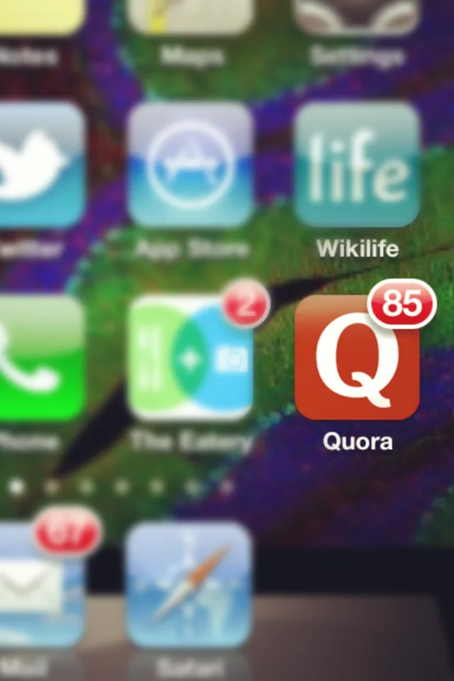

Blog · June 13, 2012
crazy awesome, quora
“Sweet, intense and cool all in one.” Urban Dictionary thus defines “crazy awesome,” solidifying the phrase into infinite internet existence. Yes. It doubles as a description of Quora.
My last three blog posts have featured Quora. Why? Because it is impacting how I think and I think I should share the process as it unfolds.

Stats:
I’ve asked 68 questions and contributed 65 answers. I follow 51 topics and 11 boards, 6 of which I curate. 2358 credits. 152 followers, 109 following.
My most popular board is How to entertain an intellectual with 106 followers, 26 posts and 2636 views.
Yesterday I woke up to 85 notifications.
Whoa.
One month ago those numbers were halved or quartered. Notifications were virtually non-existent.
It’s safe to say that Quora is a little addictive. Thankfully, if you’re intelligent and interactive (or famous in San Francisco), Quora’s community will love you back. Why?
In the words of Jason Preston, “Quora is curiosity, never satisfied. ”
…at the core I think I find Quora addictive because it is a targeted attack on human curiosity.
We’re all wired, somewhere in our brains, to be turned on by new knowledge. And Quora is designed to constantly surface new answers about topics we are interested in, without us having to ask the questions.
And when we do have questions the crowd is there to help. Curiosity fuels me on Quora. It fuels people to reach out and interact with each other. Here are a few examples.
Inbox notes from strangers:
Going through your quora answers, I see so much energy, optimism and straight pointedness.
Love it !!
another came in while I was writing this post:
I’m a recent graduate who took the plunge into the polluted fires of China and recently came back out to seek greener pastures States-side. Many of the experiences I’ve had are once-in-a-lifetime, so your outlook on career-life balance definitely resonates with me.
To fulfill my long-term goal of becoming an entrepreneur and achieving financial freedom, I’m making a career transition–I hope into an entry-level sales position. Yet, in the back of my mind, I know that rationalizing what I want to or should do doesn’t have much to do with reality, so I want to ask you a simple question:
How did you get onto the road of being absolutely happy with what you’re doing?
I know it’s a big question that probably has an equally big answer, but if you have the time to distill your experience, I’d really love to read your reply.
Awesome. I will reply to him.
I need to think hard to venture out, to be uncomfortable and unconventional. Great people like you make this world interesting!
You can see why why Quora makes you feel good. Strangers spontaneously light up your day with kind words, useful answers and entertaining ideas. This week I unexpectedly discovered that caffeine is a natural insecticide and that hippopotamus milk is pink. Useful? Probably not. Delightful? Definitely. I love surprises and ideas, two things which Quora is full of.
I often get on Quora to achieve a thoughtful interlude between projects during the day. And ok, in honesty, I’ve also been losing too much sleep to the epic Quora news feed (it’s 1 am now). So what’s the point of all this? Quora is a story. It’s unfolding now. It’s influencing my daily activities, my perspective. Right now I’m not sure how to think of it. I do think about it, though.. why Quora is valuable and how that value transfers to other parts of life.

Quora is a dose of “hm, that’s interesting!” every time you open the app. After a brief spurt of ADD-ish idea tangents, I return to life refreshed, inspired, and might even shape projects in a different way than before the influence of Quora.
It inspires me to diversify creativity and share outputs, like autotuned voice memos, and experiences by responding to the occasional college grad looking ta build a life he loves.
In closing, here’s a little creative challenge for you, noble reader:
“What is the most epic day you can imagine?”
Tony Nguyen sets the stage:
Here goes nothing.
You wake up in a time machine 3 days in the past on a deserted island somewhere in the Atlantic, and upon walking out, you discover that a feast fit for a king is laid out, catering to whatever culinary desires you possess. Finishing the last of your decadent meal, you fly using your newly available superpowers and perch atop a double rainbow.
You discover that all the women of your fantasies are lined up waiting on command to do whatever you wish. After you have completed most if not all of your fantasies, you ride a neon robot giraffe to the start of EDC, a massive rave with your favorite producers/Djs. You then proceed to party until the end of your most epic day ever.
This all took place while accompanying theme music followed you around.
I laughed out loud when I read this and it made me happier for the rest of the day (small joys go far). Maybe it was the imagination or perhaps the surprise that someone actually answered. Either way, it’s crazy awesome. I can hardly wait until tomorrow – a new day, the sunny end of this night. New ideas and discoveries await on Quora and beyond.
First published on my old blog, amyrobinson.wordpress.com, June 13, 2012.